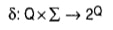
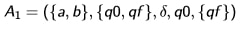
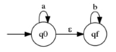
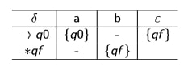
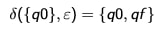

2.10.Automatos com Movimentos Vazios
O Autômato Finito Não-Determinístico com movimento vazio é um 5-upla definida como:
M = (∑, Q, δ, q₀, F)
Onde:

a qual função é uma função parcial;
Exemplo:
Autômato Finito com Movimentos Vazios:

O autômato pode ser representado pelo grafo ilustrado:

Onde δ é como abaixo, representada na forma de tabela é tal que ACEITA(M) = L:

Ao processar o movimento vazio, cria-se uma segunda cabeça de leitura que irá para o destino da transição, enquanto a outra permanece na origem. Assim:
